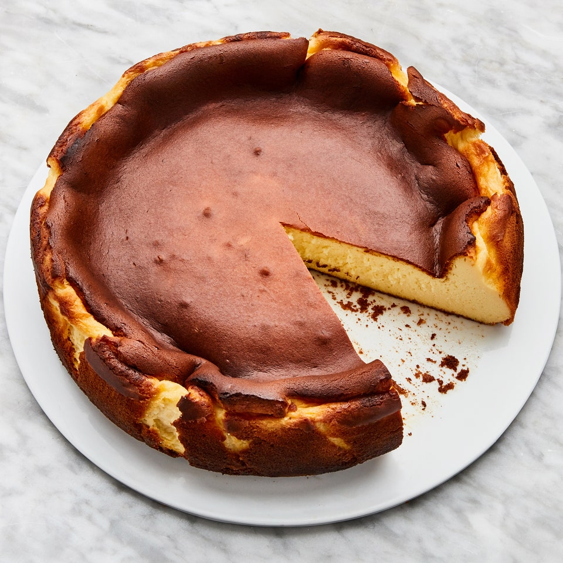

Burnt Cheesecake

Description
This cheesecake is the alter ego to the classic New York–style cheesecake with a press-in cookie crust. Inspired
by a Basque version, this is the cheesecake that wants to get burnt, cracked, and cooked at high heat. Which
also means this is the cheesecake that’s impossible to mess up.
Ingredients
- 900 gr cream cheese
- 300 gr sugar
- 500 ml heavy cream
- 50 gr flour
- 6 large eggs
- 1 tsp salt
- 1 tsp vanilla extract
Steps
- Place a rack in middle of oven; preheat to 200°C. Butter pan, then line with 2 overlapping sheets of
parchment, making sure parchment comes at least 5cm above top of pan on all sides. Because the parchment
needs to be pleated and creased in some areas to fit in pan, you won’t end up with a clean, smooth outer
edge to the cake; that’s okay! Place pan on a rimmed baking sheet.
- Beat cream cheese and sugar in the bowl of a stand mixer fitted with the paddle attachment on medium-low
speed, scraping down sides of bowl, until very smooth, no lumps remain, and sugar has dissolved, about 2
minutes.
- Increase speed to medium and add eggs one at a time, beating each egg 15 seconds before adding the next.
Scrape down sides of bowl, then reduce mixer speed to medium-low. Add cream, salt, and vanilla and beat
until combined, about 30 seconds.
- Turn off mixer and sift flour evenly over cream cheese mixture using a fine-mesh sieve. Beat on low speed
until incorporated, about 15 seconds. Scrape down sides of bowl (yet again) and continue to beat until
batter is very smooth, homogenous, and silky, about 10 seconds.
- Pour batter into prepared pan. Bake cheesecake until deeply golden brown on top and still very jiggly in the
center, 60–65 minutes.
- Let cool slightly (it will fall drastically as it cools), then unmold. Let cool completely. Carefully peel
away parchment from sides of cheesecake. Slice into wedges and serve at room temperature, preferably with a
glass of sherry alongside.
Do Ahead: Cheesecake be made 1 day ahead. Cover and chill. Be sure to let cheesecake sit for
several hours at
room temperature to remove chill before serving.